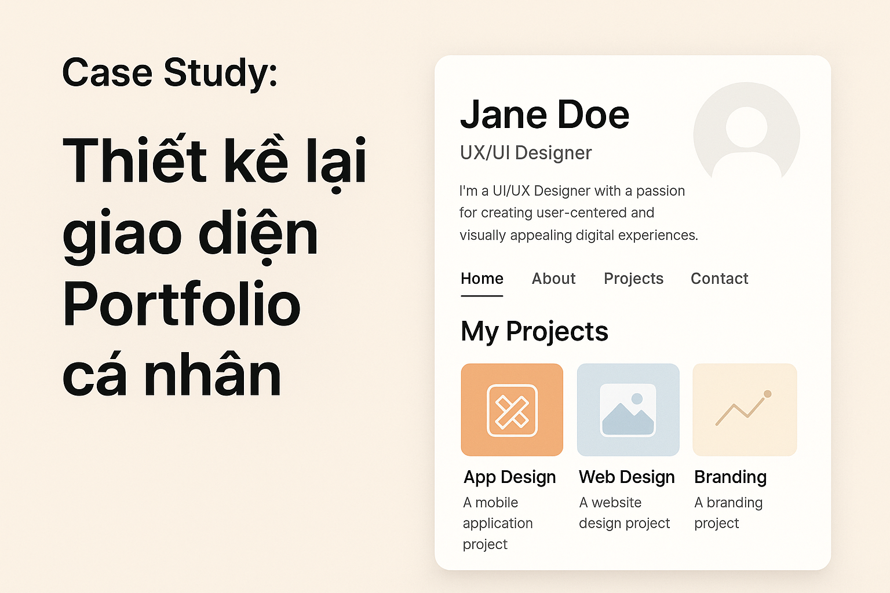
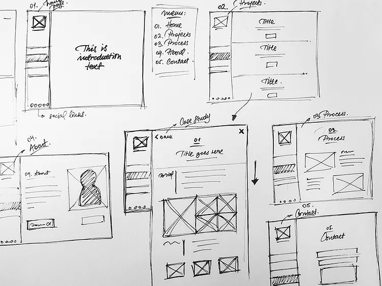
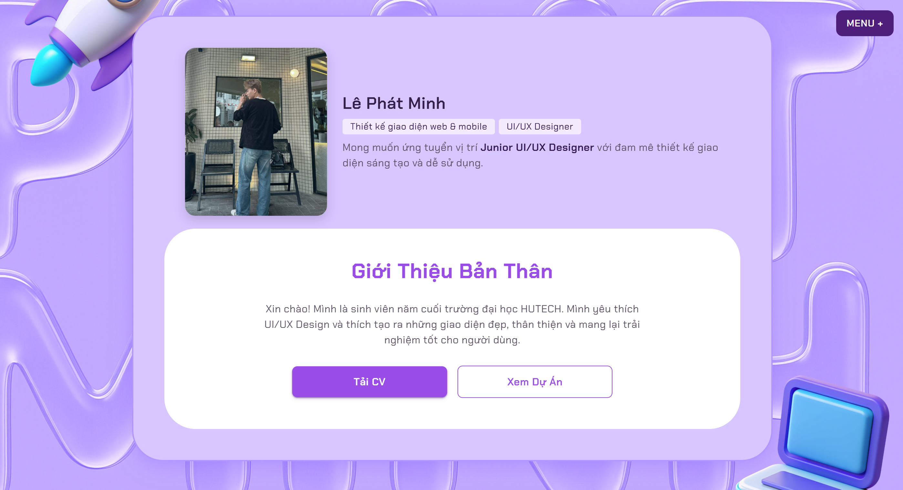
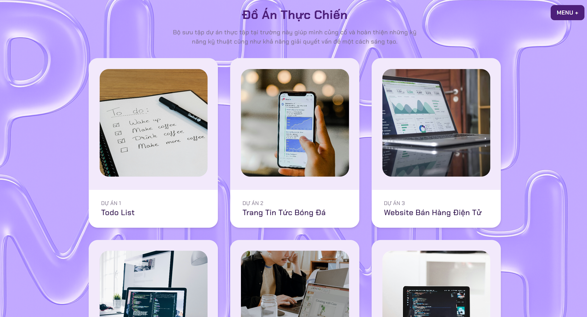

Case Study: Thiết kế lại giao diện Portfolio cá nhân

Với mình, portfolio không phải là một bộ sưu tập dự án, mà là một "không gian kể chuyện". Cách mình nghĩ, cách mình cảm, cách mình lựa chọn bố cục, màu sắc – tất cả đều phản ánh con người và tư duy thiết kế ở thời điểm hiện tại.
Sau gần một năm học và thực hành UI/UX, mình nhận ra portfolio cũ không còn “đại diện cho mình” nữa. Nó không còn cho thấy cách mình làm việc, cách mình hiểu người dùng, cũng không thể hiện được cảm xúc mà mình muốn truyền tải. Vậy nên mình quyết định thiết kế lại — không chỉ để trông đẹp hơn, mà để trở nên chân thật và có chiều sâu hơn.
🎨 1. Bắt đầu từ cảm xúc – không phải màu sắc
Trước khi mở Figma, mình viết ra cảm xúc mà mình muốn người xem trải nghiệm khi bước vào portfolio:
- ấm áp
- gọn gàng
- tối giản nhưng có điểm nhấn
- mang chút cá tính nghệ thuật
"Nếu website này là một căn phòng, thì mình muốn người khác cảm thấy thế nào khi bước vào?"
Mình nhìn lại những gì không ổn trong bản cũ:
- Font chữ hơi nhỏ và khó đọc
- Bố cục thiếu khoảng thở
- Màu tím quá chói và hơi “gắng gượng”
- Phần blog chưa có câu chuyện rõ ràng
📐 2. Wireframe & User Flow — Người xem cần gì trước?
“Người truy cập portfolio của mình thường có 2 mục đích: (1) xem dự án, và (2) biết mình là ai.”
- Giới thiệu ngắn gọn – nhưng có cá tính
- Một CTA duy nhất dẫn đến Projects
- About được đặt ngay sau Projects – đủ gần để người xem muốn hiểu thêm

💻 3. Thiết kế & Prototype – Tối giản nhưng có chiều sâu
- Màu nền sáng – tạo sự tĩnh lặng
- Tím pastel nhạt – vừa có cá tính, vừa thân thiện
- Font Poppins & Inter – cân bằng giữa mềm mại và rõ nét
Một số micro-interactions:
- Hover nhẹ trên nút và ảnh dự án
- Chuyển cảnh dịu
- Indicator nhỏ trên menu
🌈 4. Những thay đổi nổi bật
- Màu sắc: Tím pastel + xám nhạt
- Typography: Phân cấp thị giác rõ ràng
- Projects: Hình rõ, mô tả gọn, có CTA
- Blog: Chuyển sang card layout


🧠 5. Điều mình học được
Qua dự án này, mình rút ra một số bài học quan trọng:
- Hiểu người xem: Portfolio không chỉ để đẹp, mà phải giúp người xem nhanh chóng nắm được mình là ai và làm gì.
- Tối giản nhưng rõ ràng: Giữ giao diện gọn gàng, nhưng vẫn có điểm nhấn để tạo cá tính.
- Wireframe và prototype hữu ích: Giúp xác định bố cục, thứ tự nội dung và thử nghiệm trải nghiệm trước khi thiết kế hoàn chỉnh.
- Portfolio là câu chuyện của bạn: Mỗi chi tiết – màu sắc, font chữ, bố cục – đều thể hiện phong cách và tư duy thiết kế.
Nhìn chung, cái đẹp không đến từ việc thêm thật nhiều, mà từ việc giữ lại những gì quan trọng và tạo trải nghiệm có ý nghĩa.
💬 6. Lời kết
Nếu bạn đang cân nhắc có nên làm lại portfolio hay không — hãy làm. Không phải để hoàn hảo, mà để hiểu mình hơn.
Portfolio không phải để khoe — mà để kết nối.